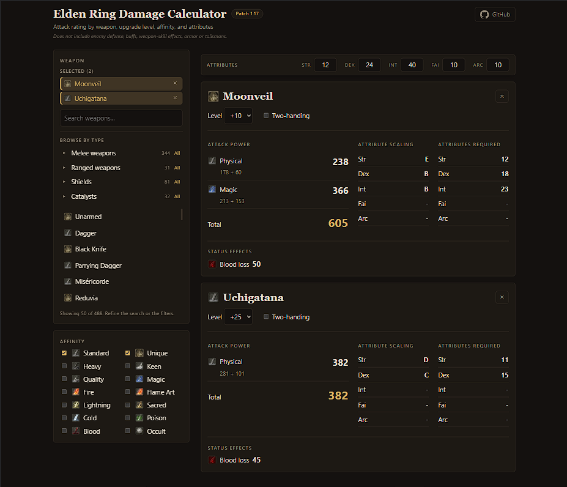
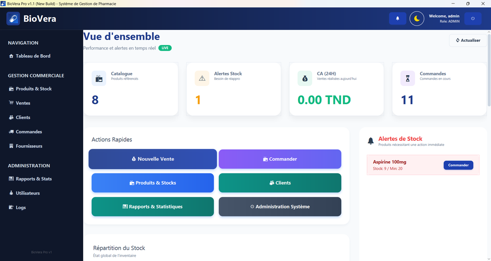

About 1
I’m a software engineering student at INSAT, Tunisia. I build desktop applications in Java, REST APIs with Spring Boot, and interactive web tools in React and TypeScript.
I care about code that is tested, documented and easy to read. I’m looking for internships, part-time work and collaborative projects.
Projects 2 / quest log
Elden Ring Damage Calculator featured
TypeScript, React, Vite
A browser tool for comparing weapons, or two configurations of the same weapon. It supports independent attributes, affinities, upgrade levels and handling, and calculates attack rating, status buildup and spell scaling.
- A/B comparisons, requirement warnings and versioned share links.
- Responsive layouts, affinity scaling previews and documented formulas.
- Unit tests and golden integration tests.
Live demo Source code

Unofficial fan tool. Not affiliated with FromSoftware or Bandai Namco. Elden Ring names and icons belong to their owners.
Dev notes3 entries
- design choice
- Comparing two builds is more useful than scoring one. Players want to know which is better, so A/B is the main feature.
- design choice
- Golden tests keep known results on file. If a formula change breaks an old result, the tests fail right away.
- challenge
- Getting the damage formulas right. There are many weapon types, affinities and special cases. I studied the game mechanics and checked my numbers against known results.
BioVera Pro, Pharmacy Management
Java, JavaFX, MySQL, JDBC, jpackage
A desktop application backed by a MySQL database, with separate administrator and employee roles. It covers point of sale, supplier orders, PDF reports and an audit log, follows a layered model, DAO, service and UI structure, and is packaged as a Windows executable.
Source code

Dev notes3 entries
- design choice
- The DAO talks to the database. The service layer holds the rules. Keeping them apart makes the code easier to change.
- design choice
- JavaFX for a Java desktop app. MySQL for structured data like medicines, users, sales and stock.
- challenge
- Keeping sales and stock in sync. When something is sold, the stock must update correctly.
Film Festival API
Java, Spring Boot, H2, Maven
A REST API modeling film festival workflows: film management, jury voting, scheduling and award selection. It has six resource groups with CRUD endpoints, an average jury score per film and a festival palmares endpoint, on an in-memory H2 database.
Source code
Dev notes3 entries
- design choice
- Controllers take requests, services hold the logic, repositories talk to the database. One job per layer.
- design choice
- H2 is light and easy to set up, so I could build and test without installing a database.
- challenge
- Linking films, screenings and awards in a way that makes sense.
INSATivity, University Events team project
PHP, JavaScript, Symfony, Twig, Supabase, PostgreSQL
A collaborative platform for INSAT student events, with event filtering, a calendar, a club directory and an organizer dashboard. A separate Symfony version uses MVC, Doctrine ORM and Twig.
My part of the original version (HTML, CSS, JavaScript, PHP): the calendar and event pages, including a fix for calendar cells changing size, and changes to the event model on the backend.
My part of the Symfony version: refactored the authentication, event, club and media controllers, added form types with validation for login, registration, events and feedback, and set up security rules and a custom 404 page.
Original project Symfony version
Dev notes2 entries
- design choice
- The first version was plain PHP. We moved to Symfony for cleaner structure, routing and forms.
- challenge
- Reading the old controllers before changing them. I had to understand them first so nothing broke.
Socket Project
C, Winsock2
Four small applications exploring network programming in C on Windows.
Source code
Dev notes2 entries
- challenge
- Making client and server talk: opening a connection, sending messages and handling failures.
- lesson
- How sockets let two programs talk over a network, with IP addresses, ports and TCP.